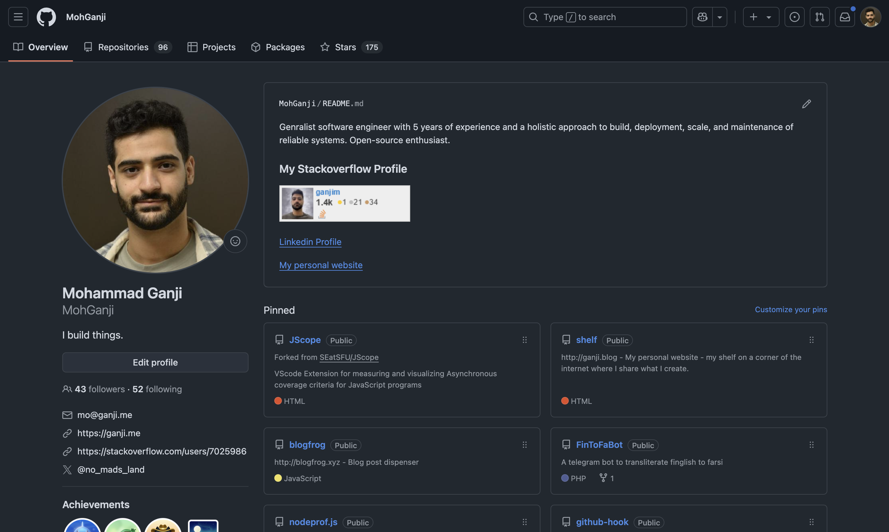
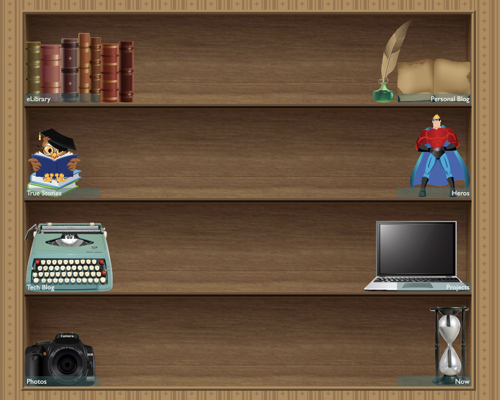
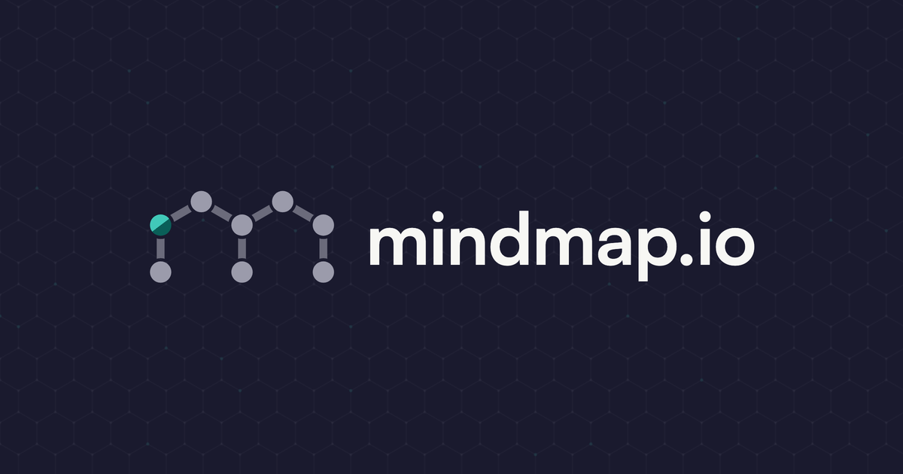
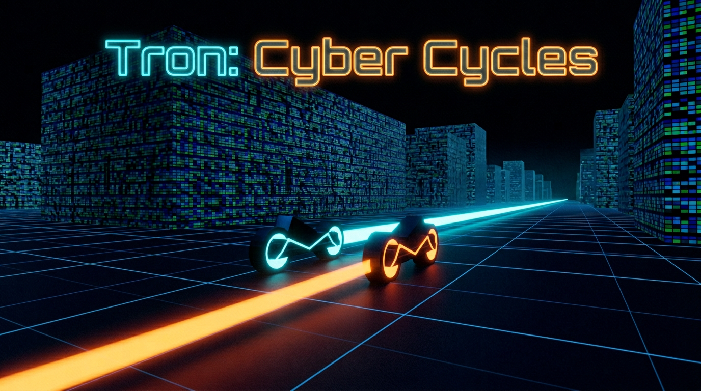
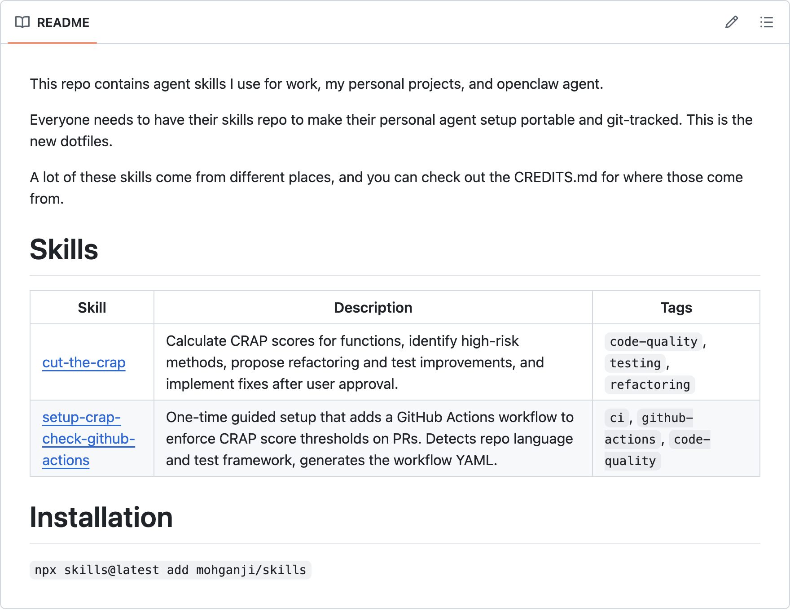
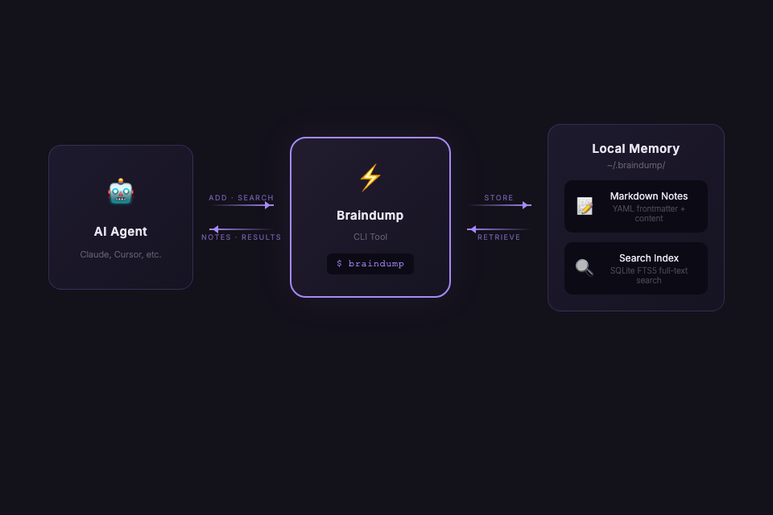
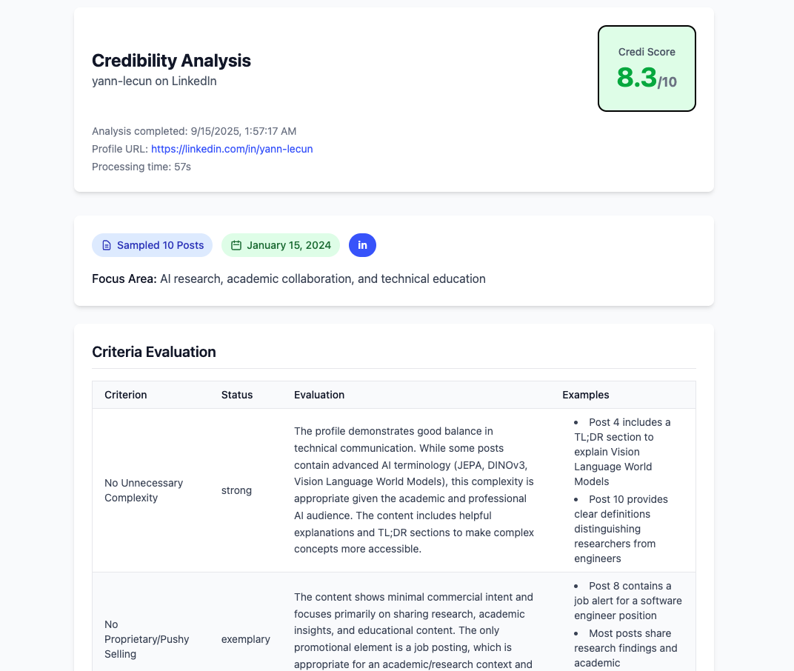
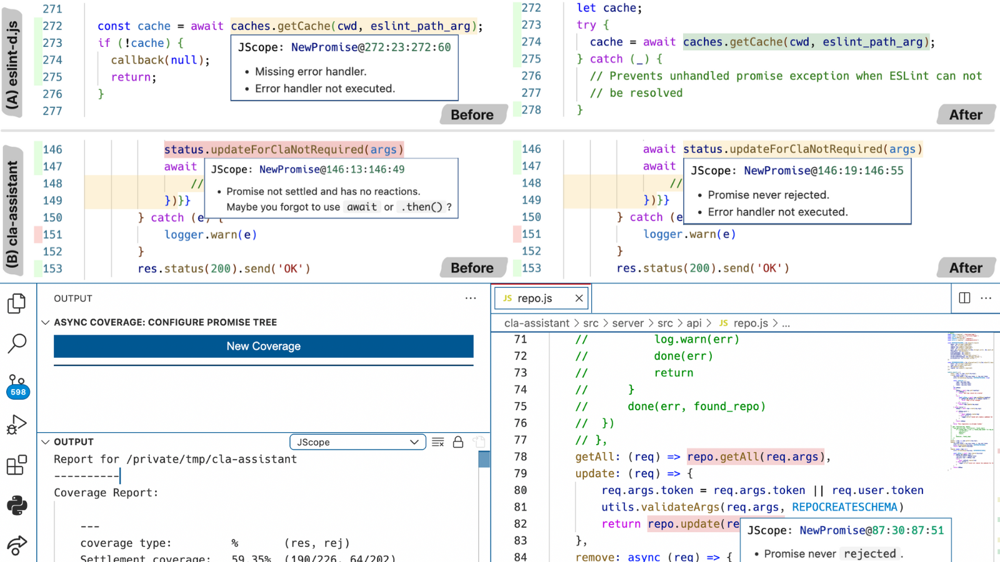
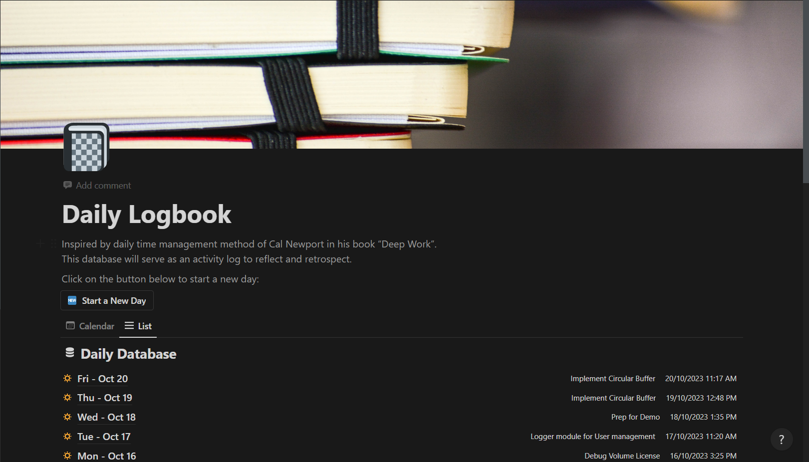
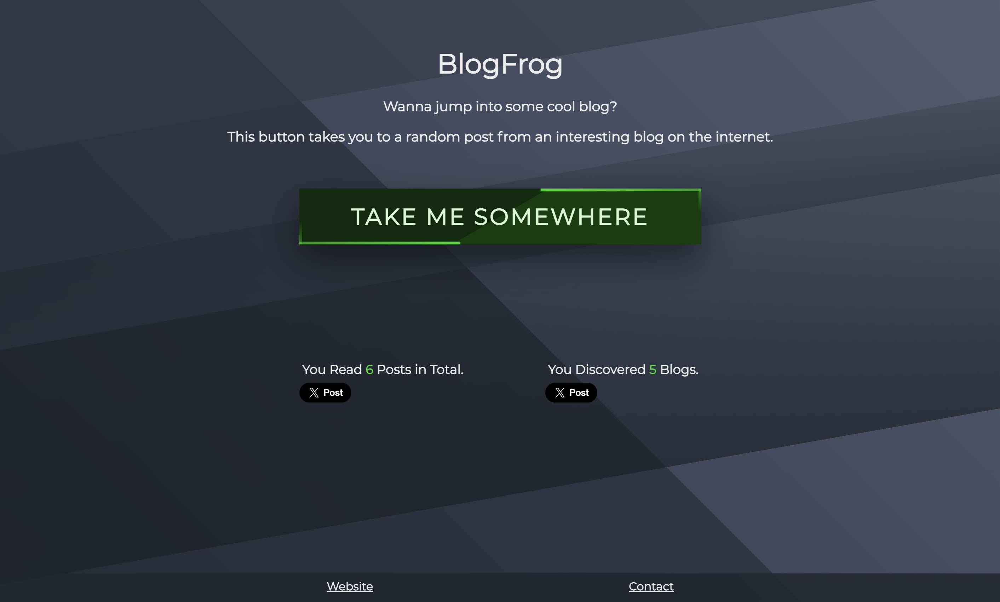

This website. My personal blog and portfolio, built from scratch using only vanilla HTML, CSS, and JavaScript for responsiveness and fun. It used to look like the shelf in the image once but now it's much more minimalistic.
Point an agent at this repo, get a software factory. Skills, guardrails, quality gates and a fleet of cloud agents that moves work from ticket to merge, all in one folder. Works with Claude Code, Cursor and Codex.

Chatbots give you a linear chat, mindmap enables you to explore multiple threads by forking chats at any point in one canvas. mindmap.io is you and your agent's favorite mindmapping tool that I'm bootstrapping.

A browser-based 3D Tron arena game built on the Three.js engine and submitted to Vibejam 2026. All code, audio, graphical assets, and 3D models are generated by AI.
Cursor, Three.js

Packaged agent skills and automations for a fully agentic SDLC. The playbook I use at work and in personal projects to ship high quality software.

An agent-friendly local memory CLI tool built in Go. It gives AI agents persistent, searchable memory across conversations using SQLite with FTS5 full-text search. Notes are stored as Markdown with YAML frontmatter, organized by category, and optimized for speed.
I developed a Telegram bot for Schemairan clinic to conduct YSQ tests (Yonge Schema Questionnaire) online. We analyzed 10k+ test results over 4 years and conducted a quantitative analysis, published as a research paper.

Credi is a content credibility analyzer. It can help you find out which voices you can trust on social media and avoid those who try to sell you something. I built this project during my participation in the Code with Kiro hackathon, and 99% of the code is generated by AI.

JScope is a VSCode extension that enables measuring and visualizing async code coverage criteria. I built it as part of my research "code coverage criteria for asyncrhonous programs (ESEC/FSE 2023)" during my master's at SFU

After reading 'Deep Work' by Cal Newport (great read btw), I was inspired to use his time blocking technique for my daily planning. So I built this notion template to help me timeblock and keep logs of my days for retrospection. The template available for free from the link below.

Blogfrog is a blog post dispencer that takes user to a random blog post from my favorite writers. I created it to replace my doomscrolling on twitter and instagram with reading blogs.